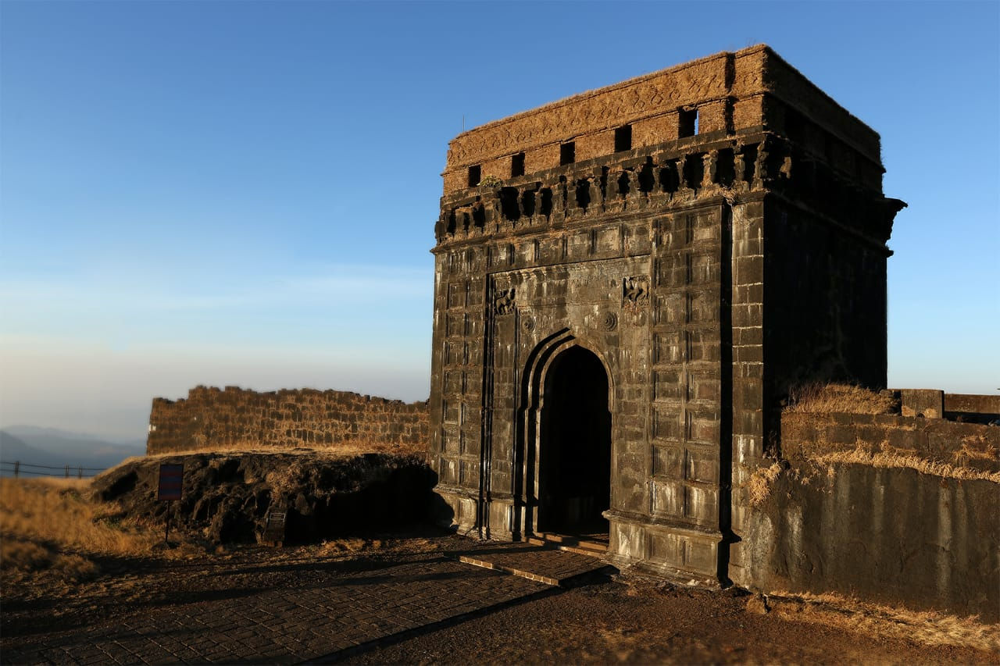

Raigad Fort is a hill fortress situated in the Raigad district of Maharashtra, India. It was the capital of the Maratha Empire under the rule of Chhatrapati Shivaji Maharaj.
The fort is located at an elevation of 2,700 feet above sea level and offers panoramic views of the surrounding landscape.
Raigad is a hill fort situated at about 25 Km from Mahad in the Raigad district. Chhatrapati Shivaji renovated this fort and made it his capital in 1674 AD. The rope-way facility is available at Raigad Fort, to reach at the fort from ground in few minutes. The fort also overlooks an artificial lake known as the ‘Ganga Sagar Lake’. The only main pathway to the fort passes through the “Maha Darwaja” (Huge Door). The King’s durbar inside the Raigad Fort has a replica of the original throne that faces the main doorway called the Nagarkhana Darwaja. This enclosure had been acoustically designed to aid hearing from the doorway to the throne. The fort has a famous bastion called “Hirakani Buruj” (Hirkani Bastion) constructed over a huge steep cliff.
Visitors can explore various structures within the fort, including the main palace, fortifications, and temples.
Today, Raigad Fort is a popular tourist destination and a symbol of Maratha pride and valor.